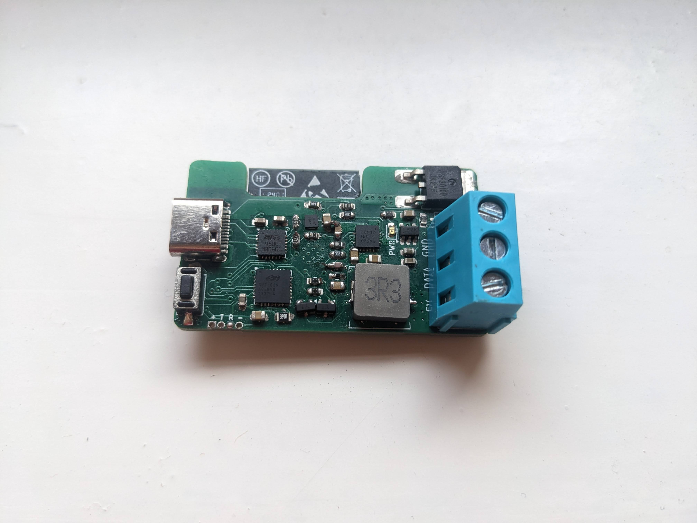
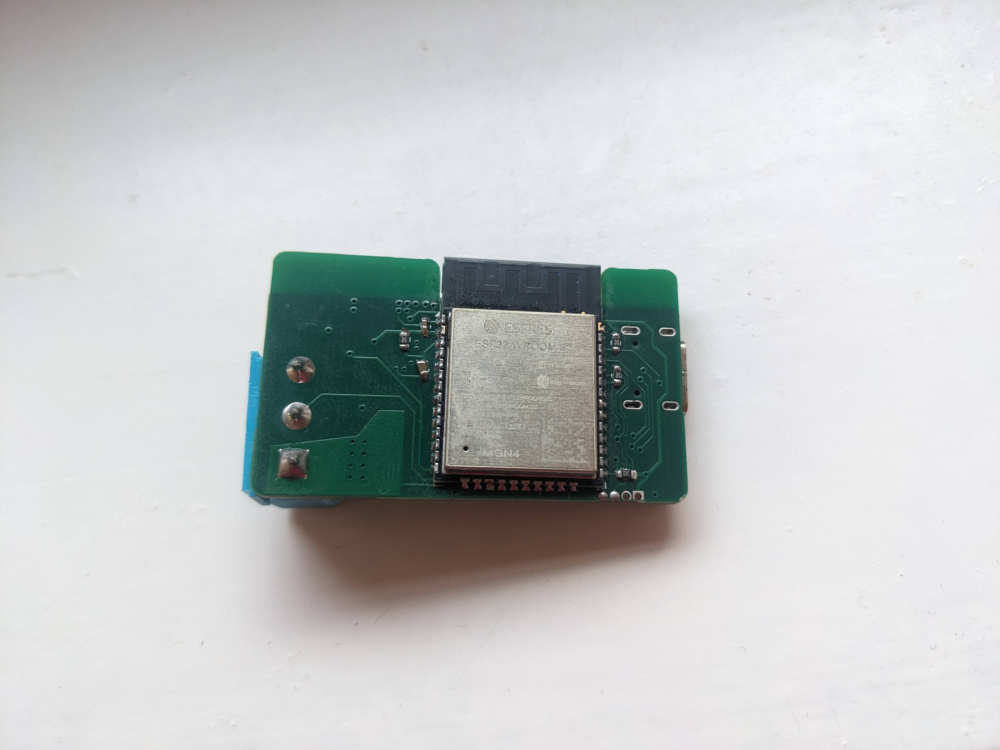
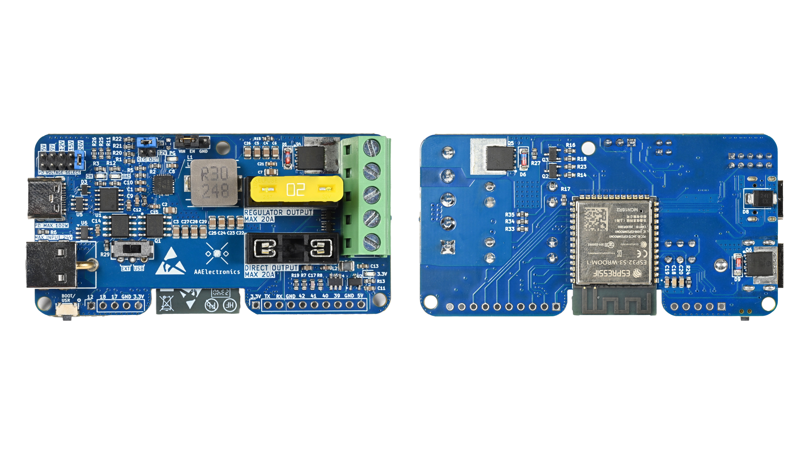
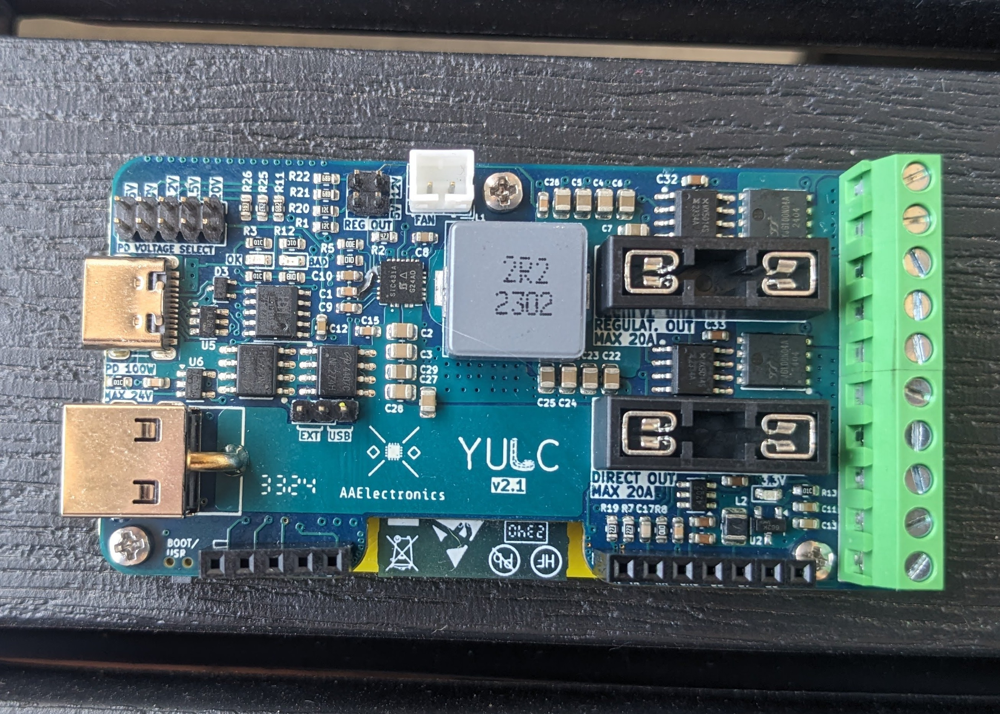
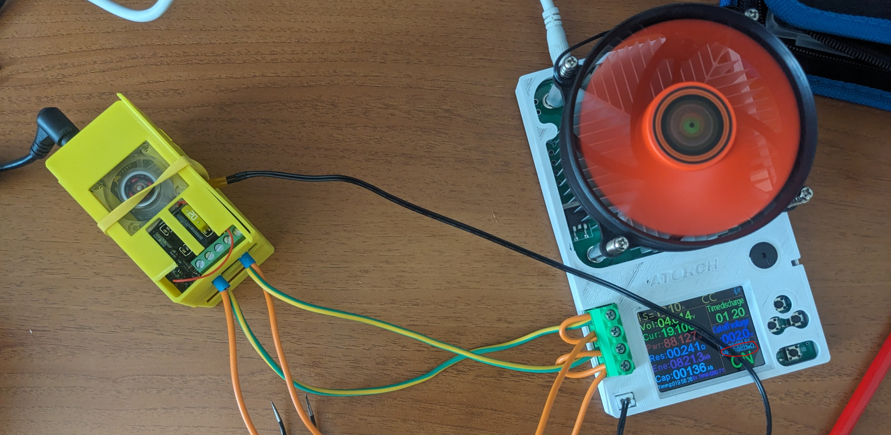
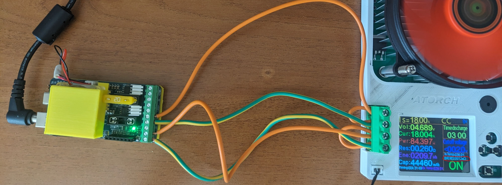
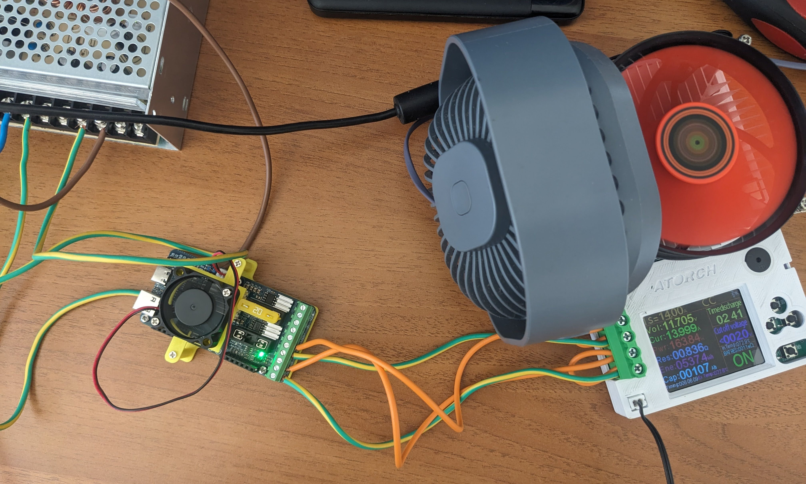
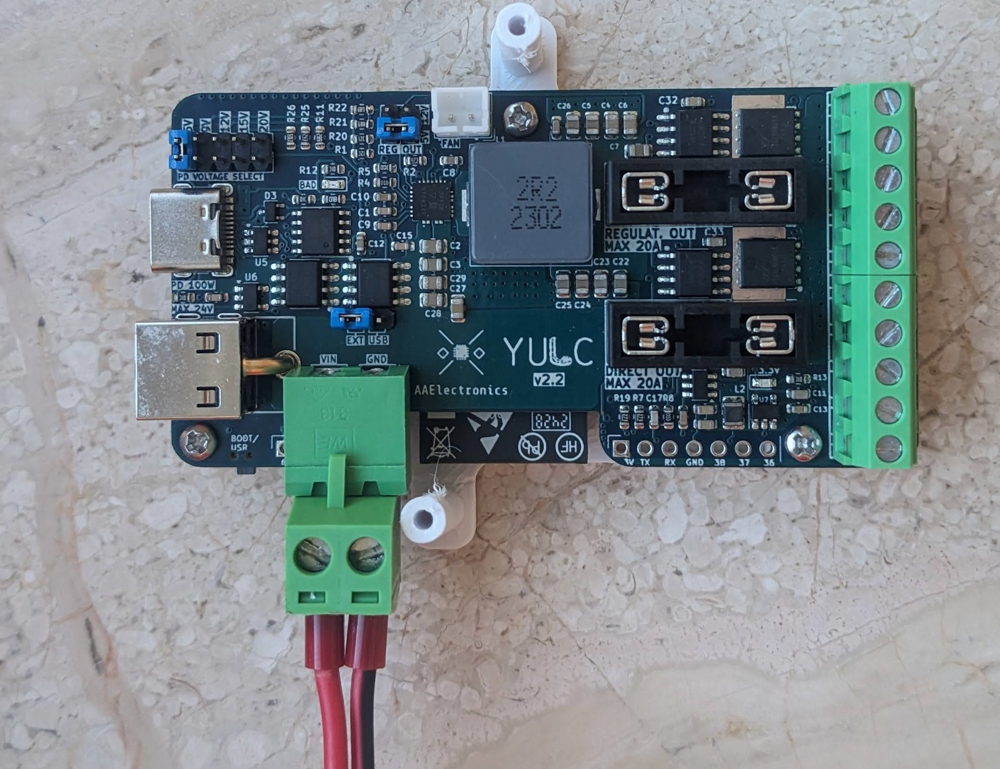

YULC
Hardware revisions
YULC v1.0
 
This first version consists in a single channel 5V Led controller.
It uses the STUSB4500 IC from ST to handle the PD delivery. This module must is configured by the ESP32 using I2C protocol through which is set the voltage the IC should ask for to the chargers. It can ask up to 20V and convert to 5V to the output.
The microncontroller is an ESP32-WROOM-32E and using an CP2102 it can be programmed through the USB-C port.
There should also be a mosfet to turn off the strips but the footprint was the wrong one, so that does not work.
YULC v2.0

This version comes with a lot of upgrades compared to the v1.0:
- 2 Channels
- Newer ESP32-S3
- Dual power supply possibility
- 5V or 12V regulated output (or direct)
- Fuses
- Level shifters
- Able to power from ext. power supply and program the ESP at the same time.
- Mosfets for both channels
Everything works correctly excepts for the mosfets. THey switch the negative terminal and, while it’s working for analog strips, it does not work for the dgital ones. The current must find another path to GND, making mosfets useless
YULC v2.1

In this version I fixed some small things. Compared to v2.0, the two mosfets are now on the top layer, to be able to put the heatsink on both. I also re-arranged the two P-Mosfets on the USB-C Power bus, to allow a better routing for the input capacitors of the main buck converter. Now they are much closer, leading to a better overall behaviour of the IC.
The inductor has changed and I also added the JST connector for the 5V fan.
The 3 mounting holes are now standardized, and M2 screws fit very well.
Now the mosfets switch the positive side thanks to two MX5014S, an high side mosfets driver. It’s quite cool because its connections are really simple, it can work up to 50V; it does not need an external bootstrap capacitor and can stay on for ever, so 100% duty cycle without any problems.
Thanks to this IC, mosfets now works flawlessly for both digital and analog strips.
Now there are more output terminals to reduce the overall resistance of the serie BUCK IC + POWER INDUCTOR + FUSE + TERMINALS. With the new inductor and more parallel terminals, the resistance dropped from around 25 mOhm v2.0 to 12/13 mOhm. Testing this new version, with a current of 19A, I have around of 250/300mV drop compared to 400mV of the v2.0. So From 5V to 4.7V instead 4.6V
For the test, the input voltage is 19V and it’s regulated down to 5V through the buck converter.


This version also performs really well with 12V output converting a lot of power. Here it’s converting 164 W from a 24V input keeping an overall temperature < 50°C after a 4hrs long test. The output resistance is even less than the other test (11mOhm vs 12/13mOhm). Probably less ripple current in the inductor.

YULC v2.2

Minor fixes for this version.
- Added a more powerful LDO for the ESP32-S3 (800 mA vs 500 mA of v2.1)
- added enough space to host an external connector if neither the USB-C nor the barrel jack are used. This gives more flexibility, better fitting more setups.
The connector and the mating connector are respectively this and this
This input (max 24V) does not feature a reverse voltage protection, so pay attention to the voltage polarity! The connector will also cover some of the available exposed pins, so if you want to use it, solder it after you have already connected the GPIOs, otherwise it will be difficult to use them.